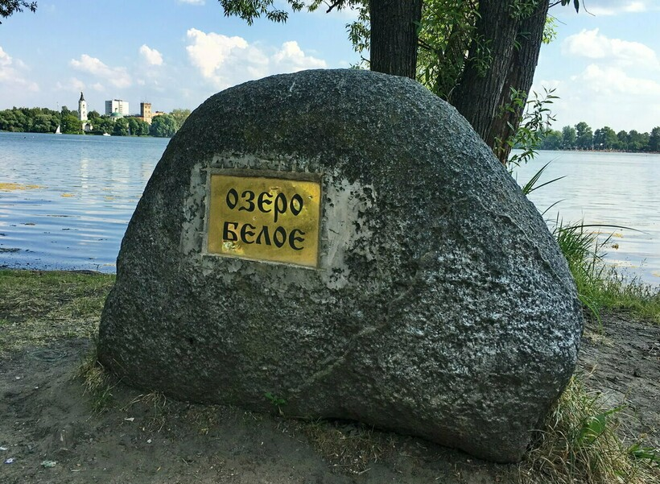

Белое озеро — самое крупное в Косинском озёрном комплексе. Имеет овальную форму, площадь водного зеркала составляет 27,5 га. Ширина между противоположными берегами — 710 и 530 метров. Максимальная глубина — 19 метров, средняя — 4,5 метра. Название озера произошло от характеристики воды. Это неглубокий, хорошо прогреваемый эвтрофный водоём; вода прозрачная, дно песчаное, местами покрыто илом. Питание озера происходит за счёт грунтовых и поверхностных вод. Также в его юго-западной части имеется сток, который соединяется со стоком Чёрного озера. Берега пологие, сухие, почти на всех имеется сельская застройка. С восточной стороны находится храмовый комплекс и каменное здание Косинской фабрики.
Озеро расположено в бассейне реки Нищенки. Сток проходит через Косинский ручей, далее через Пономарку и Нищенку. С северо-западной стороны водоём соединён протокой с Чёрным озером. Медленный водообмен связан с маловодностью протоки, которая периодически высыхает летом. Озеро отрезано от Кузьминских прудов жилым комплексом Жулебино, также от Ухтомской и Кожуховской водных систем — коллектором, который перекрывает артезианские скважины. В 1950 году, в период добычи торфа, между Белым и Чёрным озёрами прорыли искусственный водоём, в результате чего они находятся на одном уровне.

Чем заняться и что посмотреть рядом с озером
В летний сезон московское Белое озеро становится популярным местом купания и пляжного отдыха. Обустроенный пляж, на который завезен мелкий белый песок, расположен на южном берегу водоема. Зона отдыха оборудована навесами для защиты от солнца, кабинками для переодевания, туалетами. Есть спасательная вышка, а также акваторию патрулируют на катерах сотрудники местной станции МЧС. Кроме спокойного пляжного отдыха и купания, на южном берегу найдутся развлечения и для любителей активного досуга: футбольное поле, площадка для пляжного волейбола и небольшая спортплощадка.Отдохнув на «белом» водоеме Косинского трехозерья, можно посетить озера Черное и Святое. Первое раньше было известно как центр торфодобычи, второе славится среди любителей древних легенд и преданий: местные жители верят, что на берегу водоема прежде стоял храм, ныне ушедший под воду.
Кроме достопримечательностей Косино, туристов привлекает музей-усадьба Кусково графского рода Шереметьевых, которая находится в 5 км к северо-западу от Косинского трехозерья. Чтобы осмотреть весь архитектурно-художественный комплекс XVIII в. с дворцом, оранжереями, французским и английским парками, понадобится много времени, поэтому для посещения Кусково лучше выделить целый день.